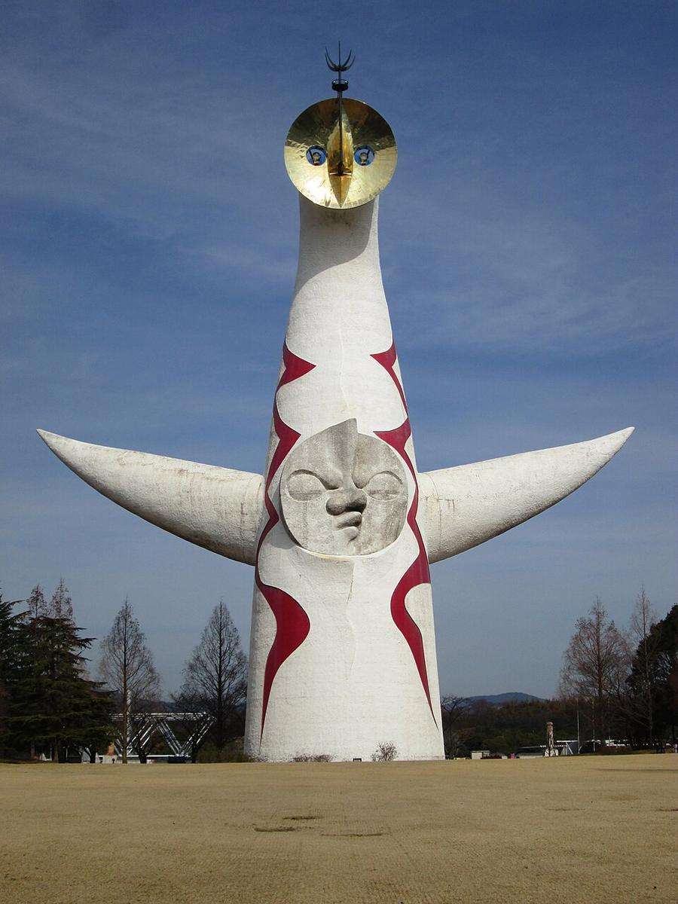
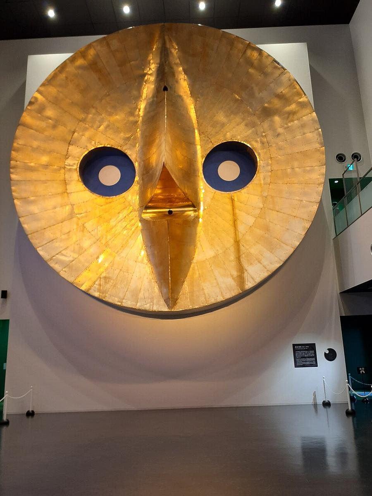
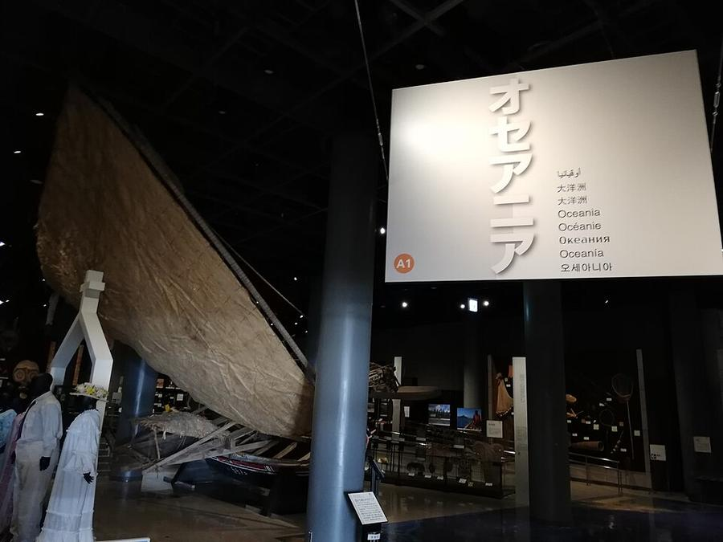
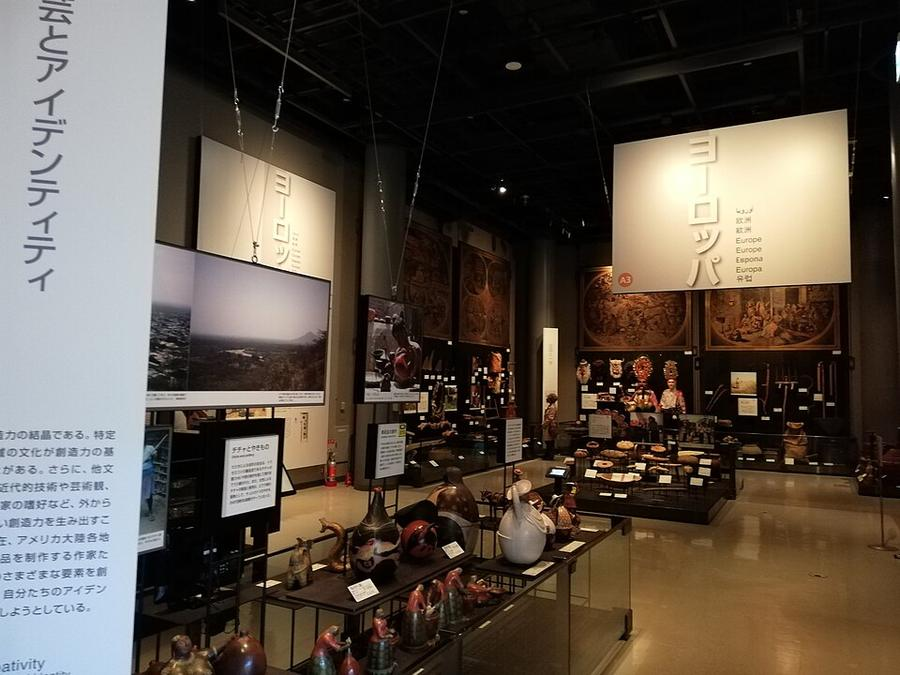

Парк на месте выставки Expo 1970. Башня Солнца - 70-метровая скульптура художника Taro Okamoto с тремя лицами, символ той выставки, важное культурное достояние. Внутри - «Древо жизни» высотой 41 м (вход только по записи накануне).
Рядом Minpaku, Национальный музей этнологии - самый большой этнографический музей Японии. До 15.12 там спецвыставка ремёсел айнов, коренного народа Hokkaido. Музей под крышей - вариант на дождливый день.
| Часы | Парк 9:30-17:00, вход до 16:30, в октябре без выходных. Minpaku 10:00-17:00, вход до 16:30, закрыт по средам. Башня Солнца внутри 10:00-17:00, только по записи накануне |
|---|---|
| Вход | парк 450 ¥; Minpaku 780 ¥, с выставкой айнов 1 200 ¥; башня внутри 720 ¥ |
| Наши даты | 24.10 в парке большой концерт, часть дорожек перекрыта |
| На месте | 3-4 ч |
| Дождь | ⛅ часть под крышей, в дождь - частично |
Источник часов и цен: minpaku.ac.jp, expo70-park.jp, taiyounotou-expo70.jp (офиц.)
Фото: Wikimedia Commons, автор и лицензия под каждым. Поезда: Yahoo!乗換案内 на 24-26.10.2026, пешие отрезки: OSRM. Часы и цены проверены 24.10.2026 13:50 JST. ← ко всем местам